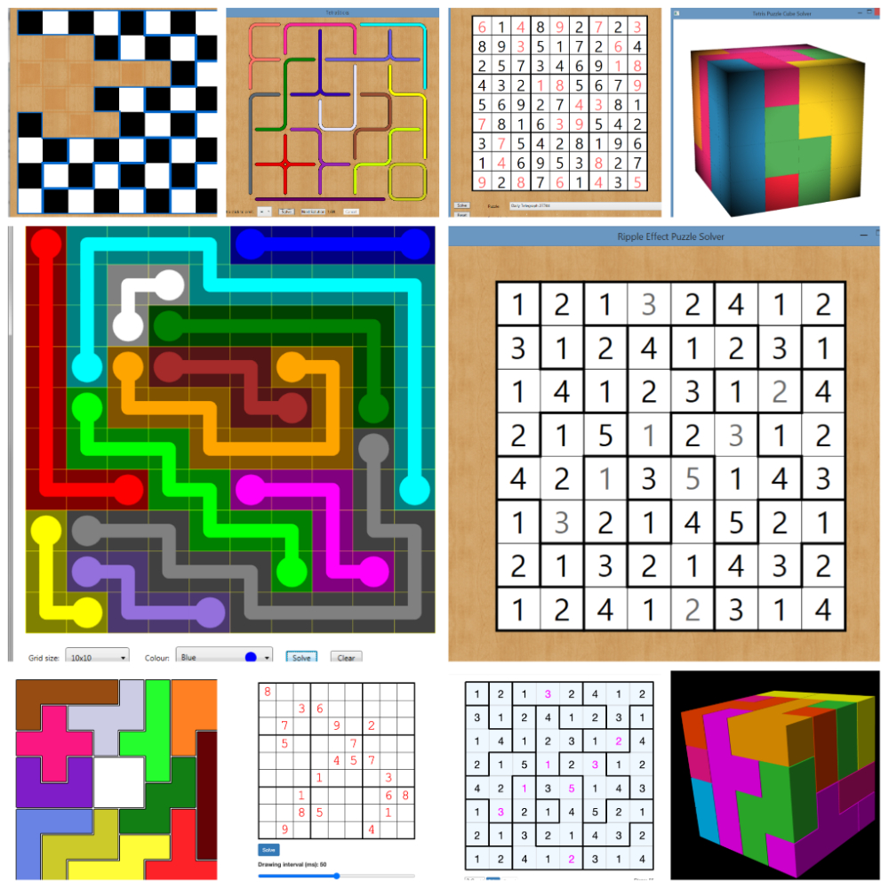
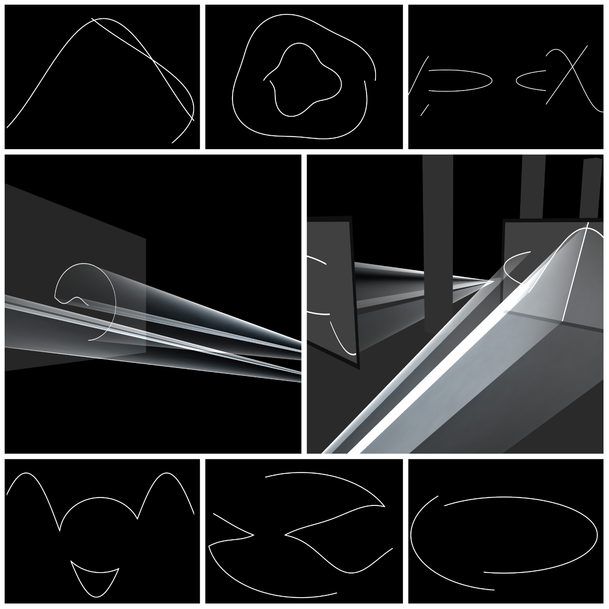
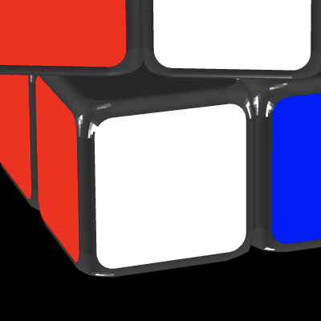
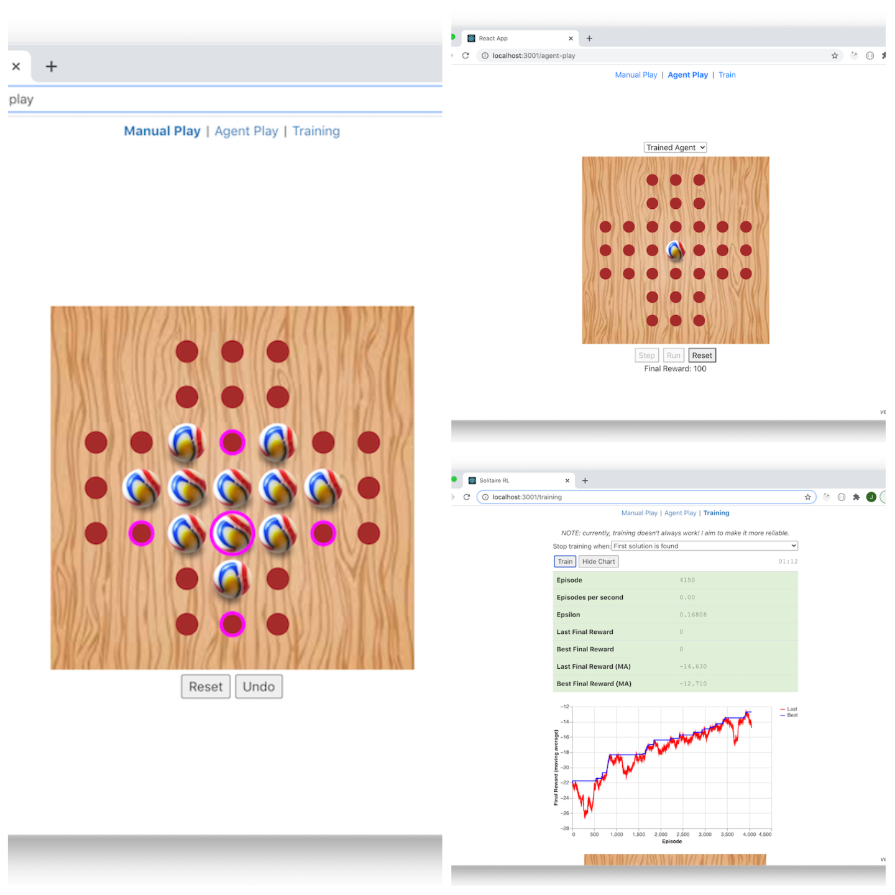
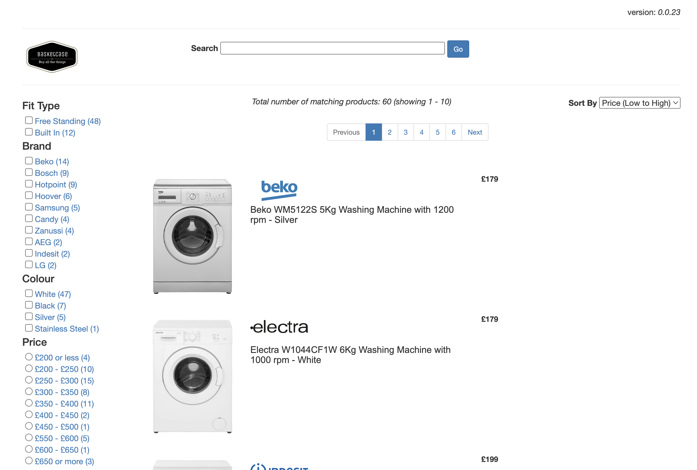

Contents
- Sudoku Buster
- Shazizzle
- Donald E. Knuth's Algorithm X using the Dancing Links technique
- Solid Light Works
- Rubik's Cube
- Sliding Puzzle
- Solving Peg Solitaire using Reinforcement Learning
- Mastermind
- Basketcase
- .NET Global Tool: dotnet-versioninfo
Description
This little web app uses the camera to scan a Sudoku puzzle from a newspaper or magazine, solves it and displays the solution.
I use OpenCV to find the bounding box of the Sudoku puzzle. Initially, I used OpenCV.js but it is very large (I got the build of OpenCV.js down to about 4MB by omitting stuff I wasn't using). Later, I moved this code to C++ and packaged it as a web assembly. This got it down to about 1MB. See this separate project.
In order to recognise the digits/blanks, I used TensorFlow.js to train a convolutional neural network (CNN) using about 70 images of Sudoku puzzles from newspapers and magazines. See this separate project.
To solve the scanned Sudoku puzzle, I use my implementation of Donald E. Knuth's Algorithm X. See this separate project.
Technologies
- JavaScript
- OpenCV
- C++ Web Assembly
- TensorFlow.js
Screenshot
TODO
Deployed Site
Description
After experimenting a bit with the Web Audio API, I then created a very basic version of Shazam based on this paper and this blog post. There are only 12 tracks in the database!
Technologies
- JavaScript
- Web Audio API
- PostgreSQL
- RxJS (when matching in streaming mode)
Screenshot
TODO
Deployed Site
Description
I have implementations of this algorithm available as packages in both .NET and JavaScript - along with multiple demo applications. The algorithm can be used to solve a class of problems known as "exact cover" - essentially where a fixed number of pieces must all be used exactly once each.
Screenshots
The images in the collage are as follows (left to right, top to bottom):
- DraughtBoardPuzzle (.NET), TetraSticks (.NET), SudokuDlx (.NET), TetrisCubeDlx (.NET)
- FlowFreeSolverWpf (.NET), RippleEffectDlx (.NET)
- pentominoes (JavaScript), sudoku-dlx-js (JavaScript), ripple-effect-dlx (JavaScript), TetrisCubeWebGL (JavaScript)
Repos
- .NET
- DlxLib - available on NuGet Gallery here
- DraughtBoardPuzzle
- FlowFreeSolverWpf
- TetraSticks
- SudokuDlx
- RippleEffectDlx
- TetrisCubeDlx
- JavaScript
- dlxlibjs - available on npmjs.com here
- sudoku-dlx-js
- ripple-effect-dlx
- pentominoes
- TetrisCubeWebGL
- quick-crossword-puzzle
Deployed Sites (JavaScript)
Description
Attempt to render some of Anthony McCall's solid light works using Three.js and WebGL.
Technologies
- JavaScript
- Three.js
- WebGL
Screenshot
Deployed Site
Description
A little app that visualises a Rubik's Cube. It also visualises the solving of the cube - but currently I am cheating by simply undoing the moves used to scramble the cube.
Technologies
- JavaScript
- Three.js
- Blender
Screenshot (close-up)
Video Clip (autosolve mode)
Deployed Site
Description
A little sliding puzzle app. Allows a puzzle to be solved manually - or just click the "Solve" button and watch the app solve it for you! The solving algorithm is based on iterative deepening A* (IDA*).
Technologies
- TypeScript
- React
- Phaser
Video Clip
Deployed Site
Description
This little app uses reinforcement learning to solve peg solitaire. The app has three views:
- Manual Play - allows the user to play a game of peg solitaire manually
- Agent Play - plays a game of peg solitaire using an agent to choose the moves. There are two agents to choose from:
- Random - moves are chosen randomly
- Trained - moves are chosen by a pre-trained agent
- Training Mode - use TensorFlow.js directly in the browser to train an agent to play peg solitaire
Technologies
- JavaScript
- TensorFlow.js
- Scalable Vector Graphics (SVG)
Screenshot
The images in the collage are as follows:
- Manual play - valid moves are highlighted in magenta (left)
- Agent play - the trained agent has solved the puzzle after clicking the "Run" button (top right)
- Training mode - after a successful training run (bottom right)
Deployed Site
Description
A little app to play Mastermind. In addition, you can add the "?autosolve" query parameter to enable autosolving mode which implements Donald E. Knuths algorithm to solve the code for you!
Technologies
- JavaScript
- Vue.js
- Web Workers API
Screenshot

Video Clip (autosolve mode)
Deployed Site
Description
A simple online store selling washing machines. The section on the left hand side provides faceted navigation - implemented using Elasticsearch.
Technologies
- JavaScript
- AngularJS 1.x
- Elasticsearch
Screenshot
Deployed Site
Description
A .NET global tool to display the version info of .NET assemblies. It is available on NuGet Gallery here.
Technologies
- C#
- .NET